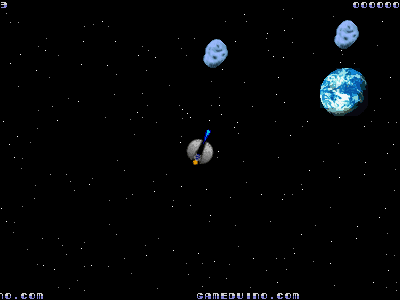

asteroids¶
A version of the classic scrolling shooting space game, running on an Arduino in 27 Kbytes.
The controller is four Sparkfun arcade buttons connected as:
6 Left 5 Right 4 Thrust 3 Fire
The background graphics - stars and planets - use about 130 characters. Foreground graphics use about 75% of sprite RAM, because of the large number of rotations. The game uses a 16-frame rotation sequence: the first four frames are stored in sprite RAM:

and the remaining frames are generated using the hardware’s sprite rotate bits.
Asteroids uses hardware collision detection to track missile-rock collisions, and player-rock collisions. To do this, it draws the sprites in the following order:
- player
- missiles
- rocks
- explosions
After the sprites are drawn, the main loop waits for a frame then downloads the hardware’s collision table. Any rock sprites that are touching player or missile sprites have their collide flag marked for the next cycle. The game uses hardware’s JK collision mode (jkcollision) to prevent rock-rock collisions from masking player- and missile-rock collisions.
A split-screen scroll keeps the top and bottom borders stationary while scrolling the central section around the map.
The sprites are mostly taken from the SpriteLib GPL. All the graphics are compressed using the scheme described in compression. This reduces their size by about 40%.
Last modified $Date: 2011-05-13 11:32:42 -0700 (Fri, 13 May 2011) $